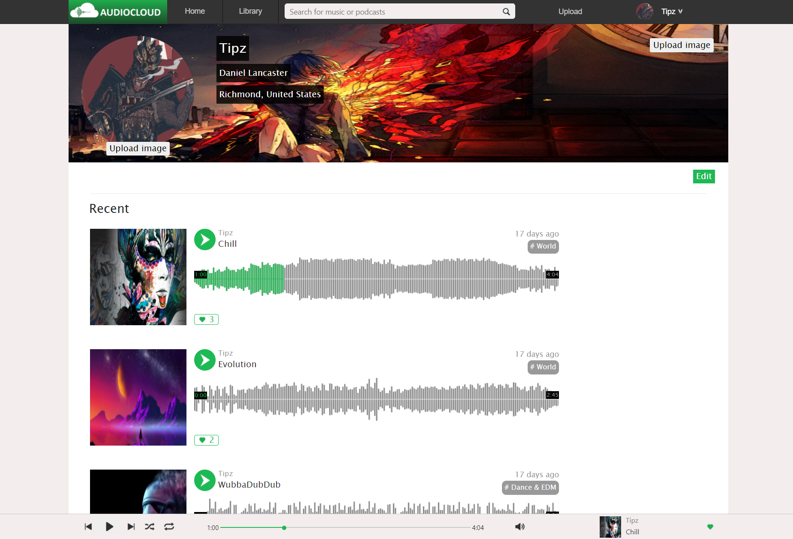

I love to travel and have fun. I try to put that same energy into my projects, some of which are games and music platforms.
AudioCloud
An audio platform and music sharing site consisting of listeners and creators developed in Ruby utilizing a Rails back-end and React in the front.
LOOT

A video game database consisting of user contributed in-game item recipes. With a team, the site was created in 7 days using JS, Express, and MongoDB.
Valor

A top-down roguelike video game in an old school arcade style built entirely in JavaScript and HTML.